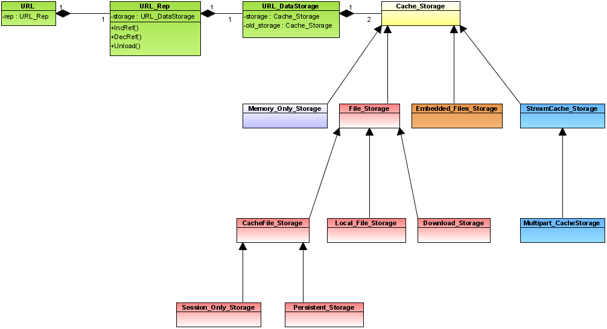

API documentation generated by Doxygen contains information about the internal organization of the module.
The cache is divided in contexts, and each context is a separated cache. There is a special context (usually che context ID 0), that is the default cache.
Eache context is managed by a dedicated Context_Manager chain (more on this later). The contexts are globally managed by a Cache_Manager, that is then specialized by the URL with the URL_Manager class.
The following diagram shows the main classes that build the cache subsystem architecture.

This is a small example of how to created a Context:
URL_CONTEXT_ID ctx_err; // Context used to check for errors
OpFileFolder chain_folder_err; // Cache folder used to check cache errors
ctx_err=urlManager->GetNewContextID();
g_folder_manager->AddFolder(OPFILE_CACHE_FOLDER, UNI_L("chain_err"),&chain_folder_err);
urlManager->AddContextL(ctx_err, chain_folder_err, chain_folder_err, chain_folder_err, FALSE);
Starting with Core 2.5, Opera can support multiple levels of cache, chaining the Context_Managers. Some operations are chained, meaning than (possibly under some conditions) they are propagated to the next manager on the chain. This is a work in progress, and the details will change in the future.
The following is a small, incomplete, example of how to chain contexts Context. For the complete code, please check cache_chain.ot
Context_Manager *man_err = urlManager->FindContextManager(ctx_err);
Context_Manager *man_err2 = OP_NEW(Context_Manager, (ctx_err2, chain_folder_err2, chain_folder_err2));
Context_Manager *man_err3 = OP_NEW(Context_Manager, (ctx_err3, chain_folder_err3, chain_folder_err3));
Context_Manager *man_ok=OP_NEW(Context_Manager, (ctx_err, chain_folder, chain_folder));
man_err2->ConstructSizeL(1024, TRUE);
man_err3->ConstructSizeL(1024, TRUE);
man_ok->ConstructSizeL(1024, TRUE);
man_err->SetNextChainedManager(man_err2);
man_err2->SetNextChainedManager(man_ok);
man_ok->SetNextChainedManager(man_err3);
The Context manager maintains the following
The Context Manager consists of a database of URL_Rep objects, maintained in a hashed list (url_store). All non-unique URLs are stored in this database.
Additionally, all URL_Rep objects, also unique ones, that have URL_DataStorage objects (not Unloaded), are listed in a list of Least Recently Used objects (LRU_list), through a linked list based on the data storage objects. The lists are organized as those using RAM (LRU_ram), those using only temporary session resources (LRU_temp), and those intended for persistent storage (LRU_disk). URLs are moved to the end of the list (in their segment) each time they are significantly accessed. When memory or disk resources are needed, the URL at the head of the list (the least recently used item) is removed repeatedly until enough space has been freed.
The Cache_Storage class hierarchy controls the actual storage of a URL's data. Various implementations include RAM only storage and several types of File storage for temporary and persistent Cache, as well as accessing local files directly, and saving downloaded files to a given location.
These objects are exclusively controlled by the URL_DataStorage class
The following is a disagram that show the current implementations:
The URL_DataDescriptor class provides this functionality:
The descriptor, which is created by a call to URL::GetDescriptor(), and owned by the caller, contains a buffer containing the most recently read information for the URL's Cache Storage object.
Data is either read directly from the Cache Storage object, or more precisely, the Cache Storage object is told to write data to the buffer.
When data is stored in an encoded form (e.g. compressed), or needs to be read in a different character encoding (e.g. UTF-16), a stack of decoders are created. Original data is fed through the stack where each stage performs the necessary transformation to the data before passing it on.
Either the descriptor or the cache storage objects can post MSG_URL_DATA_LOADED messages to the reader that there is more data available, provided that the caller have provided a MessageHandler object that can be used for this purpose. If a MessageHandler was not provided, then the caller must poll the descriptor until it have read all the data.
General usage:
Get a descriptor (desc) from a URL url by calling url.GetDescriptor().
Check for more data by using desc->RetrieveData(more).
Access buffer using desc->GetBuffer() and desc->GetBufSize().
When the data have been handled use desc->ConsumeData() to committ the buffer. Callers SHOULD use as much of the available data as possible in each iteration. If more data is needed in a single iteration desc->Grow can be used to increase the buffersize.
Continue Reading until "more" is FALSE, AND desc->GetBufSize() is zero. Messages will not be posted after "more" becomes FALSE
Continue Reading until "more" is FALSE, AND desc->GetBufSize() is zero, if necessary wait for more data (using an unspecified mechanism), unless desc->Loaded() is TRUE (in this mode, "more" can be FALSE, even if there will be more data available later).
Delete "desc"